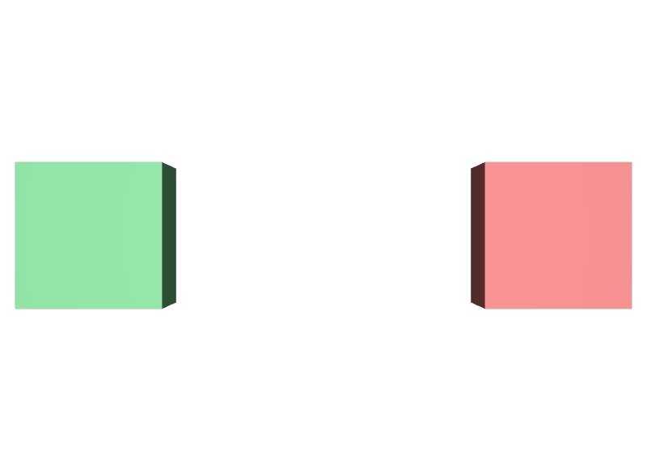

Directなら必ず勝つと思う
先に比べられるのはArcの種類です。種類が違えばLIVERPSの順序が優先します。
STEP 52 · COMPOSITION
同じ種類のArcでも、どこに張られたかで強さが変わります
今日これだけ
公式情報に基づく説明
あるPrimに効いているComposition Arcは、そのPrim自身に書かれたものと、祖先のPrimに書かれて降りてきたものに分かれます。前者をDirect Arc、後者をAncestral Arcと呼びます。STEP 33 LIVERPSの強さはArcの種類の順序ですが、同じ種類どうしが競合したときは、Direct Arcのほうが強くなります。
USDA
#usda 1.0
(
defaultPrim = "Kit"
metersPerUnit = 1
upAxis = "Y"
)
def Xform "Kit"
{
def Cube "Part"
{
double size = 1
color3f[] primvars:displayColor = [(0.2, 0.7, 0.3)]
}
}#usda 1.0
(
defaultPrim = "Part"
metersPerUnit = 1
upAxis = "Y"
)
def Cube "Part"
{
double size = 1
color3f[] primvars:displayColor = [(0.85, 0.2, 0.2)]
}キットの部品は緑、差し替え用の部品は赤です。
USDA
def Xform "World"
{
def Xform "OnlyAncestral" (
references = @ancestral-kit.usda@
)
{
double3 xformOp:translate = (-1.6, 0, 0)
uniform token[] xformOpOrder = ["xformOp:translate"]
}
def Xform "BothArcs" (
references = @ancestral-kit.usda@
)
{
over "Part" (
references = @direct-part.usda@
)
{
}
double3 xformOp:translate = (1.6, 0, 0)
uniform token[] xformOpOrder = ["xformOp:translate"]
}
}どちらも親のXformでキットを参照しています。違うのはBothArcsだけで、その内側のover "Part"にもう一つReferenceを直接張っています。/World/BothArcs/Partから見ると、キット由来のArcはAncestral、このoverに書いたArcはDirectです。
結果

OnlyAncestralはキット由来の緑のままです。右のBothArcsは、部品へ直接張ったReferenceが勝ち、赤になりました。examples/lesson-33/arc-strength.usda / Apple USD Tools 0.25.2 のusdrecord（Hydra Storm・Metal）/ macOS 26.5.2・Apple M4確かめる
from pxr import Pcp, Usd
stage = Usd.Stage.Open("arc-strength.usda")
prim = stage.GetPrimAtPath("/World/BothArcs/Part")
for arc in Usd.PrimCompositionQuery(prim).GetCompositionArcs():
node = arc.GetTargetNode()
print("%-22s ancestral=%-6s -> %s %s" % (
arc.GetArcType(), arc.IsAncestral(),
node.layerStack.identifier.rootLayer.GetDisplayName(), node.path))
# Pcp.ArcTypeRoot ancestral=False -> arc-strength.usda /World/BothArcs/Part
# Pcp.ArcTypeReference ancestral=False -> direct-part.usda /Part
# Pcp.ArcTypeReference ancestral=True -> ancestral-kit.usda /Kit/Part
print(prim.GetAttribute("primvars:displayColor").Get())
# [(0.85, 0.2, 0.2)] … 赤。Direct Arcが勝っている並び順がそのまま強さの順です。ancestral=FalseのReferenceが、ancestral=TrueのReferenceより上に来ています。STEP 53 Prim Stackで見ても、direct-part.usdaのほうがancestral-kit.usdaより前に並びます。
Diagram
Python
from pxr import Usd, UsdGeom
stage = Usd.Stage.CreateNew("arc-strength.usda")
UsdGeom.Xform.Define(stage, "/World")
both = UsdGeom.Xform.Define(stage, "/World/BothArcs")
both.GetPrim().GetReferences().AddReference("ancestral-kit.usda")
# 子へ直接Arcを張る。over でよい（定義はキット側が与える）
part = stage.OverridePrim("/World/BothArcs/Part")
part.GetReferences().AddReference("direct-part.usda")
stage.Save()差し替える側はOverridePrimで足ります。Primの定義はキット側のReferenceが与えているため、defにする必要はありません。この形が、アセットを部分的に差し替えるときの基本の書き方です。
USDA → Python mapping
USDA
親に references = @kit.usda@↓Python
parent.GetReferences().AddReference("kit.usda")USDA
over "Part" ( references = @part.usda@ )↓Python
stage.OverridePrim(path).GetReferences().AddReference("part.usda")USDA
（どちらのArcか調べる）↓Python
arc.IsAncestral()Beginner notes
よくある間違い
先に比べられるのはArcの種類です。種類が違えばLIVERPSの順序が優先します。
親に書いたArcは、子から見るとAncestralです。子の一部だけを差し替えるなら、その子に直接書きます。
overで足ります。defにしても動きますが、「新しく定義している」と誤解されます。
差し替え先のPathは、参照後の階層でのPathです。参照元のファイル内のPathとは異なります。
Glossary
Official references
確認日: